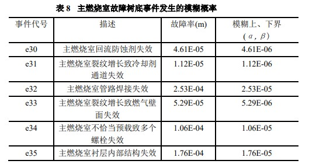

基于模糊故障树的发动机失效模式分析
侯金丽，基于模糊故障树的可重复使用火箭发动机失效模式分析[D]，北京航空航天大学，2012.
原文链接: 无
文章思路
🔺Chapter 1-2
故障树分析法就是在系统设计过程中，通过对可能造成系统故障的各种因素(包括硬件、软件、环境、人为因素等)进行分析，画出逻辑框图(即故障树)，从而确定系统故障原因的各种可能组合及其发生概率，以计算系统故障概率，采取相应的纠正措施，提高系统可靠性的一种设计分析方法。
模糊故障树分析(Fuzzy Fault Tree Analysis，简称 FFTA)针对故障树分析法中底事件和顶事件发生概率的不确定性问题，采用模糊概率取代传统可靠性分析中精确的概率值，并根据模糊数学中的扩张原理，将系统中每一个底事件的失效模糊概率用梯形模糊数来描述，模糊数之间的乘积运算采用近似处理，然后在传统重要度的基础上定义一个函数来刻画每一底事件对顶事件发生的贡献，从而确定底事件的模糊重要程度。
故障树的分析步骤:
- 选择顶事件，理清故障结果和故障原因之间的关系；
- 明确各个底事件的精确概率，没有精确概率的采用模糊概率；
- 概率值转化为三角/梯形模糊数；
- 定性分析得到最小割集；
- 计算底事件的模糊重要度；
- 对计算结果分析，获得结论
🔺Chapter 3
♦️ 3-1
以主燃烧室故障概率为例，可以得到故障树和发生的模糊概率如下：


计算由顶事件模糊概率公式及三角模糊数可算得顶事件的模糊概率为：
F(t)=[ 5.81E-04+6.40E-05λ，7.10E-04-6.5E-05λ]
顶事件发生故障概率区间为5.81E-04~7.10E-04，最可能发生故障的概率为6.45E-04。
综合所有部件的所有底事件之后，就可以求出顶事件的故障概率（即整个系统的可靠性，是一个范围）。把各个底事件的发生概率除以顶事件的发生概率再乘以概率重要度就可以得到底事件的关键重要度，对此进行排序可以明确系统中容易发生故障的组件和主要故障原因。
为简化建树及定性、定量分析的繁琐工作，本文开发一款计算机辅助建树软件，实现故障树最小割集的自动计算和快速定量分析，节省了大量计算资源和时间。
♦️ 3-2
系统的故障征兆和故障原因是存在因果关系的，本文就用模糊诊断矩阵来建立它们之间的关系，把故障征兆向量乘以模糊诊断矩阵就可以得到故障原因向量，进而分析一个顶事件发生在各个故障原因上的分布。
文中把记模糊矩阵为R，其中第k行第j列的元素记作。可以把理解为当第k个故障征兆（即现象）发生的原因是第j个原因的“概率”，但是这个“概率”实际上使用FV重要度表示的。
例如推力室故障中，可能的四个征兆依次是无推力、推力异常、温度异常、起火；故障原因有四个依次是主喷注器故障、喷管故障、泄露、燃烧室身部故障。是出现无推力的现象时泄露导致的“概率”（FV重要度）。
至于FV重要度的定义，可以直接由公式（3.7）和（3.8）表示。
🔺Chapter 4
因为可重复使用火箭发动机系统在实际上会呈现出很多状态而不是只有二态，所以本文引入了多态系统故障树，就可以关注到二态故障树容易忽略的安全隐患。
尽管不能完全理解长篇的公式推导，但是可以确定的是，这种多态系统故障树是想解释非独立组件之间的偶尔关系处理方法，从而直观地评价耦合关系对组件、系统失效概率的影响程度。例如涡轮泵故障率增大预燃室的故障率也增大，但是预燃室故障率增大涡轮泵却不变。这种“不互相依赖”的关系可以在多态系统故障树之中得到体现。
在明确组件的耦合关系式后，当组件失效发生变化时，系统故障率的变化率会明显放大，这在精确预估系统故障率时需要得到高度重视。
🔺Chapter 5-6
此外，原文粗略统计了 SSME 各主要组件发生故障的部件、失效模式、故障原因、危险等级及相应的改进方法建议，这是基于故障树和多态系统共同分析得到的结果。
由于仅靠故障树和多态系统还并不能建立一套完整的系统失效模式评估体系，因此引入了因子化排序方法。它综合考虑了影响发动机可靠性的风险因子、时间因子和概率因子，用假定的公式把各种失效模式的影响程度量化了。因此可以排序，可以和纯概率分析的结果对比，就能实现更加全面的评估。
总结
- 结合故障树和模糊理论建立模糊故障树，并罗列一大部分组件和系统的故障—危险-原因-建议；
- 引入多态系统解释耦合关系，更好地分析系统可靠性；
- 引入因子化排序方法，全面且体系化；
- 开发了一款分析软件，能完成故障树的建立与分析工作。